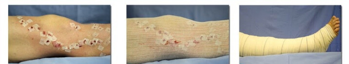
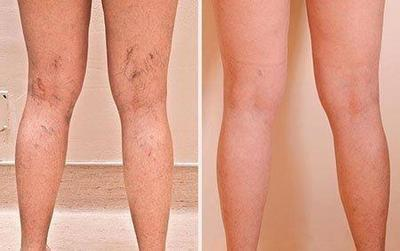

Anna Stone, znana blogerka IG prawie umarła z powodu zwykłych żylaków. Dziewczyna, zamiast
podjąć jakiekolwiek działania po prostu ignorowała żylaki.
Ona, podobnie jak wszyscy blogerzy piękności, zajmowała się swoim wyglądem, a śmiertelną
dolegliwość, czyli żylaki, Anna uznała za niepoważny problem. Tak było, dopóki dziewczyna nie
trafiła do szpitala.
Anna w szpitalu
Nie bałam się, a nawet przyzwyczaiłam się do życia z żylakami. Nie mogłam
nosić tego, co naprawdę chciałam, wstydziłam się na plaży moich czarnych żył. A kiedy bolały mnie
nogi, a to było bardzo często, odmawiałam zaproszeń od znajomych i wracałam do domu, zamiast
odpoczywać i bawić się na imprezie.
Takie podejście prowadzi do tego, że ludzie umierają z powodu żylaków.
Eksperci nie przestają powtarzać jednej prostej prawdy, że żylaki samoistnie
nigdzie nie znikną, że żylaki są śmiertelną chorobą, która jest przyczyną śmierci wielu tysięcy
osób na całym świecie. Że przy pierwszych objawach tej choroby należy rozpocząć walkę z
żylakami.
A ci, którzy mają predyspozycje genetyczne, powinni zrobić wszystko, aby zapobiec
żylakom.
Pierwsze objawy żylaków to: ciężkość nóg, obrzęk, mrowienie i swędzenie, szybkie
zmęczenie nóg i ból.
Żylaki – skrzepy krwi, owrzodzenia troficzne, nieoczekiwana i bolesna śmierć
Wrzód troficzny spowodowany żylakami
Zaawansowane żylaki
Żylaki prowadzą do powstawania zakrzepów krwi w naczyniach, które mogą w dowolnym momencie oderwać
się, dotrzeć do płuc i zablokować tętnicę płucną, a nawet spowodować zawał, jeśli taki zakrzep
dotrze do serca.
Zaawansowane żylaki
Żylaki – niewidzialne codzienne niebezpieczeństwo
Za pomocą tego testu możesz łatwo ustalić, czy masz żylaki, czy nie
Sprawdź się pod kątem żylaków
1. Czy musisz zrezygnować z planów z powodu bólu nóg?
2. Czy często nosisz buty na wysokich obcasach?
3. Obecność objawów żylaków u rodziców
4. Obecność siatki żylnej na nogach, ciemnienie żył
5. Zwróć uwagę na obecność niewidocznych objawów
żylaków
Ból nóg podczas chodzenia
Nocne skurcze
Swędzenie
Obrzęki nóg
Uczucie ciężkości w nogach
Mrowienie w nogach
6. Jak szybko Twoje nogi męczą się podczas chodzenia?
7. Obecność bólu nóg po dniu pracy?
Wynik:
Uwaga! Twój wynik sugeruje, że powinieneś jak najszybciej zająć się
zdrowiem nóg i rozpocząć walkę z żylakami. Tylko w ten sposób możesz chronić swoje zdrowie,
zapobiegać poważnym i niebezpiecznym problemom związanym z żylakami.
Wynik:
Uwaga! Twój wynik sugeruje, że powinieneś jak najszybciej zająć się
zdrowiem nóg i rozpocząć walkę z żylakami. Tylko w ten sposób możesz chronić swoje zdrowie,
zapobiegać poważnym i niebezpiecznym problemom związanym z żylakami.
Jak pokonać żylaki?
Blogerka Anna Stone zwróciła się do specjalistów tylko wtedy, gdy jej nogi zaczęły stale
boleć. Tak, że poruszała się po domu, płacząc z bólu.
Ból był okropny, nogi pulsowały. Wydawało mi się, że płoną! Nie mogłam wstać z łóżka,
szlochałam i krzyczałam z bólu. Nie wiedziałam, że żylaki mogą do tego doprowadzić!
W klinice dziewczyna została podłączona do kroplówki, przepisano jej różne środki na
łagodzenie bólu. Z bólu pomogło, ale według Anny czuła się bardzo źle z powodu takiej ilości
różnych preparatów. Jej żołądek dosłownie wywracał się na drugą stronę. A to wszystko z powodu
żylaków, na które Anna nie zwracała uwagi.
Z czasem ból zniknął. Jednak eksperci stwierdzili, że ból powróci, ponieważ żylaki
osiągnęły już stadium, gdy ból staje się przewlekły.
Początkowo Anna zdecydowała się na operację, ale po tym, jak dowiedziała się o
przeciwwskazaniach i okresie rekonwalescencji, dziewczyna natychmiast odmówiła.

Konsekwencje i powrót do zdrowia po operacji – długi i bolesny
okres
Anna chciała znaleźć nowoczesne i bezpieczne narzędzie, które pomoże pokonać żylaki.
W tym samym czasie w klinice trafiła na wywiad z jednym ekspertem, który od połowy życia
boryka się z żylakami, ekspert mówił o nowym środku, który zrewolucjonizuje walkę z żylakami.
Angela Bushar, ekspert od żylaków
„Większość środków ma wąskie spektrum działania: łagodzenie bólu, łagodzenie swędzenia, pomoc
przy obrzękach. Takie podejście nie jest skuteczne, ponieważ żylaki wymagają złożonego
działania. Właśnie taki efekt ma środek . Żel ten pomaga aktywować krążenie krwi w nogach, odpływ
zastałej krwi w żyłach. A kiedy tkanki ponownie otrzymają wszystkie składniki odżywcze, skurcze,
obrzęk, siatka żylna, ból, uczucie ciężkości nóg znikają”
Środek ma doskonały skład z kompleksem ekstraktów roślinnych, które są znane ze swojego leczniczego
działania na żylaki.
Anna wielokrotnie przeczytała artykuł, a następnie znalazła producenta tego produktu i zamówiła dwa
opakowania. Żel dostała trzy dni później i tego samego dnia zaczęła stosować. Pozbyła się pięknych,
ale niewygodnych butów, robiła masaż przeciwżylakowy stóp.

Nogi Anny po zakończeniu jednej kuracji
Ten środek mi pomógł! Udało mi się pozbyć nie tylko siatki żylnej, ale także zapomnieć o
niewidzialnych objawach żylaków.
Obrzęk, ból, swędzenie i zmęczenie zniknęły z mojego życia!
Mogłam już nie wstydzić się nóg, mogłam biegać tak długo, jak chciałam i spacerować
godzinami. Nawet znowu zajęłam się tańcem, z którego musiałam zrezygnować, gdy pojawiły się żylaki.
Po pozbyciu się żylaków życie dziewczyny i jej zdjęcia na IG się zmieniły, mogła przymierzać i robić
zdjęcia w tych strojach, które sama chciała, bez obawy, że ktoś będzie zawstydzony wyglądem jej nóg.
Mogła chodzić na długie spacery, biegać, a nawet tańczyć
Anna stwierdziła, że żel ma wiele ważnych
zalet w porównaniu z innymi środkami na żylaki:
- Wygodny Szybko się wchłania, nie jest tłusty, ma neutralny zapach
- Skuteczny Łagodzi ból nóg w ciągu kilku minut
- Niezawodny Po zaledwie 1 kuracji żyły na nogach rozjaśniły się, a
niewidoczne objawy żylaków zniknęły
Żylaki są niebezpieczne i naprawdę zabijają ludzi
Nie można myśleć, że żylaki to problem kosmetyczny. Przy pierwszym objawie tej choroby należy
natychmiast podjąć działania, w przeciwnym razie żylaki szybko się rozwiną, ból stanie się przewlekły,
żyły staną się ciemniejsze i zniekształcone, utworzą się skrzepy krwi, a na nogach pojawią się nie
gojące się owrzodzenia troficzne.
Jeśli żylaki są Ci znane nie z pogłosek, tylko z własnego doświadczenia, pomoże Ci przywrócić piękno, zdrowie i siłę Twoim nogom, tak jak
pomógł mi
Możesz zamówić wypełniając formularz
zamówienia, co jest jeszcze prostsze niż w innych sklepach.
Wypełnij formularz zamówienia;
Odbierz telefon od operatora w celu wyjaśnienia szczegółów dostawy
Możesz pozbyć się żylaków, nie zostawiaj im ani jednej szansy! Powodzenia!
UWAGA! Do dnia (włącznie) możesz
zamówić żel na żylaki ze zniżką 50%.
Ilość opakowań w cenie promocyjnej jest ograniczona! Zdąż zamówić swoje opakowanie!
Stanem na dziś pozostało:24 opakowania
Warunki otrzymania :
Zamieszkać na terenie Polska (program przeznaczony jest
tylko dla obywateli tego kraju)
Wiek powyżej 40 lat (pomoże to zapewnić środek najbardziej narażonej kategorii
obywateli)
Jedna osoba może otrzymać tylko tę ilość preparatu, która jest niezbędną do
jednej kuracji (metoda walki z resellerami)
Komentarze
Katarzyna
Radom
Ten żel jest dla mnie prawdziwym odkryciem, które zmieniło moje życie. Żylaki zmieniły mnie z
aktywnej kobiety w kobietę, która ciągle siedzi w domu. Jechałam do domu po pracy, zamiast iść
na spacer z przyjaciółmi. To było bardzo smutne. Sytuację zmieniła się właśnie wtedy, gdy
spróbowałam . Zakończyłam całą
kurację i zapomniałam o bólu nóg.
Agata
Warszawa
Podoba mi się też ten produkt, szybko się wchłania, nie brudzi ubrania.
Wanda
Kępno
Łagodzi ból w ciągu kilku minut. Jestem zadowolona.
Grażyna
Poznań
Czy są jeszcze opakowania w cenie promocyjnej?
Janusz
Lublin
Tak, zniżka jeszcze obowiązuję, właśnie zamówiłem opakowanie dla żony.
Beata
Ostrołęka
Jak się okazało, kupowałam taki żel u znajomego o wiele drożej. A mogłam zamawiać. Składanie
zamówienia jest dość łatwe.
Andrzej
Poznań
Dobry środek na żylaki, zacząłem smarować nogi i zupełnie zapomniałem o bólach.
Helena
Kutno
A ja ją znam! Obserwowałam ją na IG i nigdy bym nie pomyśla, że ma żylaki. Dobrze, że się ich
pozbyła i teraz wystawia takie piękne zdjęcia, nie tylko powyżej pasa.
Michał
Wrocław
Żona zwalczyła żylaki z pomocą tego żelu. Dobry środek.
Maria
Żywiec
Właśnie zamówiłam! Ze zniżką!
Iwona
Katowice
Ja też pozbyłam się żylaków i zaczęłam żyć nowym życiem, a nawet dostałam nowe stanowisko,
przed tym siedziałam i myślałam tylko o tym, żeby wrócić do domu i położyć się w łóżku, tak mnie
bolały nogi. A teraz wszystko jest w porządku.
Jolanta
Poznań
pomaga. Polecam.
Paweł
Wrocław
Pracuję jako kelner, nogi bolą strasznie, ale dzięki ból zniknął
Karolina
Kraków
Uwielbiam ją! Miałam nadzieję, że będzie z przystojnym Jaime((((
Dziękuję! Twoja opinia została wysłana do
moderacji.


Komentarze
Katarzyna
Radom
Ten żel jest dla mnie prawdziwym odkryciem, które zmieniło moje życie. Żylaki zmieniły mnie z aktywnej kobiety w kobietę, która ciągle siedzi w domu. Jechałam do domu po pracy, zamiast iść na spacer z przyjaciółmi. To było bardzo smutne. Sytuację zmieniła się właśnie wtedy, gdy spróbowałam . Zakończyłam całą kurację i zapomniałam o bólu nóg.
Agata
Warszawa
Podoba mi się też ten produkt, szybko się wchłania, nie brudzi ubrania.
Wanda
Kępno
Łagodzi ból w ciągu kilku minut. Jestem zadowolona.
Grażyna
Poznań
Czy są jeszcze opakowania w cenie promocyjnej?
Janusz
Lublin
Tak, zniżka jeszcze obowiązuję, właśnie zamówiłem opakowanie dla żony.
Beata
Ostrołęka
Jak się okazało, kupowałam taki żel u znajomego o wiele drożej. A mogłam zamawiać. Składanie zamówienia jest dość łatwe.
Andrzej
Poznań
Dobry środek na żylaki, zacząłem smarować nogi i zupełnie zapomniałem o bólach.
Helena
Kutno
A ja ją znam! Obserwowałam ją na IG i nigdy bym nie pomyśla, że ma żylaki. Dobrze, że się ich pozbyła i teraz wystawia takie piękne zdjęcia, nie tylko powyżej pasa.
Michał
Wrocław
Żona zwalczyła żylaki z pomocą tego żelu. Dobry środek.
Maria
Żywiec
Właśnie zamówiłam! Ze zniżką!
Iwona
Katowice
Ja też pozbyłam się żylaków i zaczęłam żyć nowym życiem, a nawet dostałam nowe stanowisko, przed tym siedziałam i myślałam tylko o tym, żeby wrócić do domu i położyć się w łóżku, tak mnie bolały nogi. A teraz wszystko jest w porządku.
Jolanta
Poznań
pomaga. Polecam.
Paweł
Wrocław
Pracuję jako kelner, nogi bolą strasznie, ale dzięki ból zniknął
Karolina
Kraków
Uwielbiam ją! Miałam nadzieję, że będzie z przystojnym Jaime((((